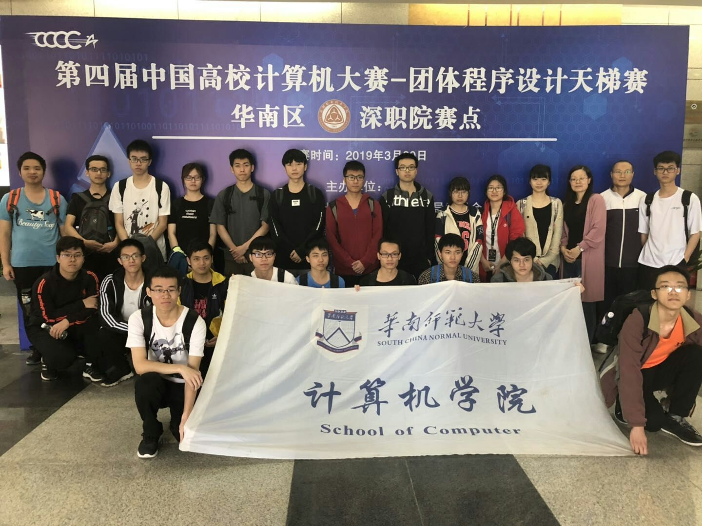
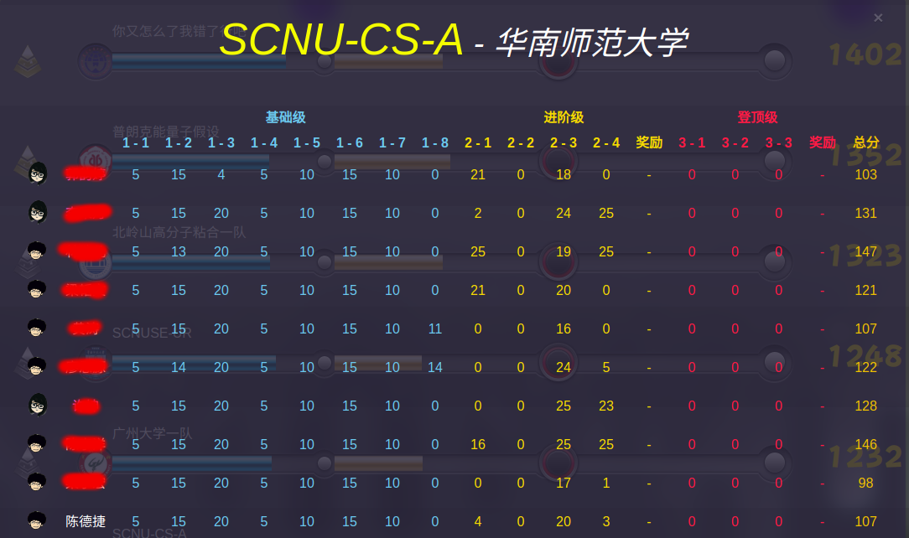

自从大一参加了ACM校赛拿了二等奖之后就很久很久没刷OJ的题了，大二上上了数据结构课，学了些算法，自己平时真把算法荒废了，感觉自己越来越菜了，但回想起自己参加算法竞赛A题的那种热血沸腾的感觉，还是毅然决然的报了蓝桥杯和第四届天梯赛。
蓝桥杯
本来寒假心里还立了flag要怎么怎么刷题的，结果寒假都在学校做大创的事情，回家就安安心心的过年了。一直到比赛之前，断断续续的刷了一点题，加上那一周的周五和周六都在打天梯赛的训练赛和模拟赛，对蓝桥杯的准备就更加的少了，心想拿个省三就好了吧，毕竟交了300嘛。
比赛的早上下了点小雨，那段时间的天气一直都不太好，感觉整个人的心情也没那么好了。来到机房已经非常多人了，轻轻松松找到了自己的座位(这就是来的晚的好处之一吧)，每个人都发了一小支农夫山泉，嗯，这次学院还是蛮贴心的嘛。坐下来环顾了周围，只看见了ht大佬和我一个机房，其他都是不认识的。比赛前电脑是锁住的，并不能提前敲一下头文件之类的，好吧好吧，那我就只能干坐着等开始啦，顺便提一下，300买的草稿纸确实大:)。这一次比赛没有了以前的那种紧张感，手也不抖了，以前参加ACM校赛、天梯赛的时候，开局一小时手都是抖的，需要一段时间适应，可能是老了吧，没那么有激情了。
第一题是求平方和，1~2019之间所有包含2、0、1、9的数的平方和，比如20、39这样的数，直接暴力解决了。
第二题是改版的斐波那契数列，1、1、1、3、5…，每次前三个数相加，求第20190324项的最后四位数字。明知会爆范围，还是撸了个迭代，明知山有虎，偏向虎山行的精神感动死我自己了，换了long double还是爆，就撸了个高精度加法(我也是醉了)，撸完发现时间复杂度实在太高了，等了一段时间没出结果，就又去看了遍题目，发现只需要输出最后四位数字就好了，其实只需要模拟后四位，每次mod 10000就好了，当时真的觉得自己太傻X了，还好这次比赛感觉时间充足(肯定是我太菜了，才有时间慢慢看题目)，最后还是过了。
第三题是求最大降雨量的，大致的题意是：有个法师有49张牌，编号为1~49，每天施展一张牌，一共施展7周，每一周的能量值为这一周施展的牌号的中位数(例如第一周施展1~7这七张牌，那么这一周的能量就为4),最终的能量为七周能量的中位数，求出最大的能量值，从而获得最大的降雨量。利用贪心，最后求出是34。
第四题是走迷宫，每次可走四个方向，分别为D、U、L、R，输出字典序最小的路径。给的是一个30×50的01迷宫，想到的方法是dfs+回溯求出所有的路径，输出字典序最小的就好，随便撸了一个交了。赛后在知乎看到有人用excel表格做，将1换成黑色方块，剩下的就是可走的路，自己慢慢的走迷宫，300块玩个30×50的迷宫还是不错的嘛
第五题竟然是RSA，看到题目醉了，求出了q和p，就是没求出e，如果求出了e，再用快速幂可解(奈何我太菜，当时没解出e)。
第六题是求完全二叉树的权值，将同一深度的权值求和，求出值最大的深度，这题也随便撸了一个，也不知道过没过(过了样例就是过了，哈哈哈)。
第七题是外卖店的优先级，一共1～N家店，在某一时刻有一个订单，则优先级加2，若某一时刻没有订单则减1，优先级达到5的进入一个缓存中，若缓存中的店的优先级小于等于3则被踢出缓存，求最后缓存中还有多少家店铺。撸了个模拟交了，估计T了好多个点吧(人菜是这样的啦，靠暴力混混题)。
第八题修改数组，从前开始遍历，若当前值在前面出现过，则当前值加1，直到前面没出现过此数即可，又是暴力出奇迹交了(TLE警告)。
第九题糖果，共k种口味，每包糖果有不同的口味，问最少买几包能吃遍全部口味的糖果，dp题，不会做就过了。
最后一题是组合数问题，感觉是数学问题，需要推导，果断弃了。
美好的四小时就这样过去了，第一次蓝桥杯之旅就这样结束了，早上九点到中午一点，真是饿的不行，去对面m记买午饭，路上还看到刚打完蓝桥的小伙伴，就一起聊了聊题目，去到m记店里，发现好多计机的小伙伴，看来大家都是用m记来安慰安慰自己受伤的心灵，哈哈。
最后在天梯赛前出了成绩，省二，看了看获奖的榜单，本来挺满意省二的变得不那么满意了(黑脸)，争取明年拿到北京的门票吧～
第四届CCCC字符串大赛
上一次天梯赛是在华师举办的，当时计机出了4支队，菜鸡的我在三队拿了个成功参赛(菜是原罪)，二队拿了省奖，一队拿了国三，今年想着能不能也趟个奖回来玩玩，就报了选拔。
选拔赛的系统竟然是上机考试的系统，真的是…无话可说，共两题，一题哈夫曼编码，一题拓扑排序，数据结构题也是…醉了。
过了几天出了通知，进了一队，内心那个欢喜呀美丽呀，还能深大一日游(结果通知错了，不是去深大，是去深职院，算了算了，能去旅游就不错了)。
去年的教练是sgq老师，然而去年并没有什么赛前训练，就打了个模拟赛，今年多了hhy老师，3.22晚上打了一场训练赛，3.23下午打了一场模拟赛，根据这两场的表现还要调整一队的队员，内心慌的一逼，实在是不想掉出一队呀，不过万幸表现还行？拿到了一队的名额，但其实二队有人比我更值得这一个名额，我对自己的实力还是有点B数的。
比赛的前一天才知道不是去深大，是去深职院，我和Tover都略感失望(不过最后还是真香)。
3.30的早上出太阳了，看起来天气不错，心情更好了，可以美美的去郊游了。出发前还吃了hhy牌爱心煎饼，不过想吐槽一下车辆，学院敢出多点钱给我们租个大巴车吗，26个人挤在一辆小破车里，本来还想说看看平板的，结果是我想多了。
两个小时屁颠屁颠的到了深职院留仙洞校区，奈何我没啥文化，一句卧槽行天下，一下车就是卧槽这学校太好看了吧，卧槽这也太棒了吧，卧槽……，和华师的鲜明对比，我柠檬了。拿出手机拍了拍校园环境，这旅游景点确实不错，我都快忘了我是来参加天梯赛的了哈哈哈。


逛了一圈学校，十一点的时候开始开幕式，结束后还拍了个大合照。

饭堂感觉一般般吧，阿姨还很可爱的提醒我记得拿一瓶奶。
吃完拿了参赛证，等到十二点半多就去检录了。
机房的环境还不错，宽屏看着很爽，对比华师我又柠檬了。
今年的天梯赛就是字符串处理大赛吧，L1就有3题字符串处理。刚开始不适应环境，敲的贼慢，就和刚学敲代码似的，到后面就好了一点点。我这种菜鸡当然是按照分值从低到高开始做啦，第一个五分题是熟悉的输出，easy！第二个五分题求心里阴影面积，其实就是求一个三角形的面积，大面积减小面积即可，但是开始我看到这个图有点懵，心想5分题不都是直接送的吗，怎么这个还要稍微算一下？不过还算顺利吧。
继续往下做，遇到了第一个字符串处理题666，意思是输入一串字符串，若6连续出现4～9次，将之转换为9，若连续出现超过9个6，则转换成27。遍历+计数器可解。
第二道字符串处理题是关于诗句押韵的，输入一串诗句的拼音，若这句诗压ong的话，则将诗句的最后三个字替换成某三个字，具体忘了，想了一下A了。
第三道字符串题就是L1-8 AI，意思是智能对话，例如用户输入hello？AI输出hello！之类的，但是此题并不是换个标点符号那么简单。能想起来的一些条件有(1)去除行首、句中及行尾多余的空格。(2)将除I外的大写字母换成小写。(3)去除标点符号前的空格。(4)将独立的Can you、Could you换成I can之类的。反正此题极其麻烦，并且是20分的题，看完题目我就不想写这题了，看了看榜，发现大家的分数都不太高？有的还只A了50+左右，为了满足L1要到800分的要求只能硬着头皮试着模拟L1-8了，做到一半工作人员进来通知L1的要求降为600，果断切题，从开始到现在我的感觉是对的，这次比赛比往年的难，很多队伍都卡了L1-8。
准备开L2，又去看看榜，发现xk大佬A了L2-3，就决定跟这题。意思是有一个入口，且入口为一，然后有很多的门，每个门可能打开是很多条路，又遇到很多的门，或者是到了一个房间(即当前的尽头)，求从入口能到达的最远地方。容易想到这是一颗树，入度为0的就是入口，用搜索可解(赛后在知乎看到很多人误以为1为入口，这也算是一个坑吧)，但当时最开始想到的是用并查集，递归找父节点，求最大深度，最后拿到20分，剩下的点WA了，懒得调了就过了。
看榜发现大家做的挺快的，有人开了L2-1，继续跟榜。求所谓的特殊幸运数。幸运数：例如29的每一位数的平方和为85，这样的过程称为一次迭代，若一个数经过若干次迭代能变为1，则称这个数为幸运数，例如19-82-68-100-1。很明显幸运数迭代过程中的数也是幸运数，并且他们依附于第一个数，例如82、68、100就依附于19。特殊幸运数：即不依附于别的幸运数的幸运数，例如19。特殊幸运数的属性值：即为依附于这个特殊幸运数的幸运数个数，若这个特殊幸运数为素数，则属性值翻倍。输入一个区间[a,b]，求这个区间之间的所有特殊幸运数和它的属性值。当时觉得这题可写，我是从头开始遍历，若当前判断它为特殊幸运数则输出，但是在测试样例的时候出了问题。第一个样例是[10,40]， 10可以通过迭代变为1，所以我的算法就输出了10和它的属性值，但样例输出是没有10的，我当时怀疑样例出了问题，看了看榜发现有人A了，我就直接交了，拿了可怜的4分。赛后出来大佬说10可能依附于后面的特殊幸运数，所以10不是特殊幸运数，听到这我就一口老血吐出来，凭什么可以覆盖前面的数！内心疯狂吐槽出题人！
继续跟榜开了L2-4，这题应该是L2里面最简单的了，输入一个序列，判断能否借助栈将其按升序排列，但是栈的大小有限制。这题的题意非常容易理解吧，数据结构课有类似的题。但当时不知道怎么了，遇到了玄学bug，死活没调出来，只拿了3分，真是暴风哭泣。
最后107分滚粗。
出来大家都在疯狂吐槽L1-8，我则还在纠结自己怎么没能A了L2-1和L2-4，果然菜是原罪。
最后的榜单奉上

赛后在知乎发现吉老师也参加了，真是想不到顶级职业玩家也会来参加CCCC，屁颠屁颠去膜拜吉老师。
总结
蓝桥杯和天梯赛都不像以前那么水了，难度越来越大。蓝桥杯第一次玩，感受没那么大，但是天梯赛打过两次了，感觉确实比以前难多了，前几年的题都不算恶心，L1写的也快，这两年L1都被卡了，难受。
这两周写的题量不及职业选手的十分之一，但对我来说确实是比以前多得多，我深知自己没有吉老师那样的天赋和毅力坚持走算法竞赛这一条路，况且吉老师并不只是算法竞赛厉害，还是专业绩点第一，在P大也算是一个神仙了吧，所以算法竞赛对我来说只是生活中的一小部分，是大学四年的一小部分经历，也知道自己这一方面还差的太远太远，继续努力吧，来年再战，希望一年比一年好～